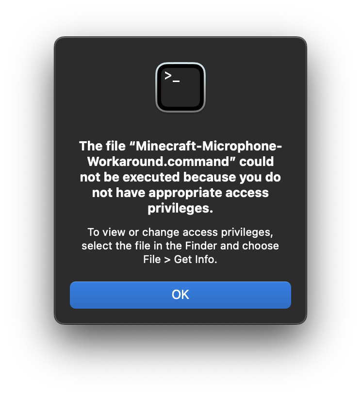

The Simple Voice Chat mod likely will not work out of the box on macOS due to microphone permissions issues. Fortunately, there is a simple workaround to get it working.
This guide assumes that you have already installed the Simple Voice Chat mod. If you have not installed it yet, install it first.
- Close Minecraft and the Minecraft Launcher if they are running.
- Download this script by mjwells2002 on GitHub.
- Double-click the .command file to open the Minecraft Launcher. If you get an Unidentified Developer error, go to System Settings and allow it.
Troubleshooting

To resolve this issue, do the following:-
Open Spotlight and type
terminalto open Terminal. -
In Terminal, type
chmod +x(with a trailing space) - Drag the .command file into the terminal window
- Hit enter to run the command